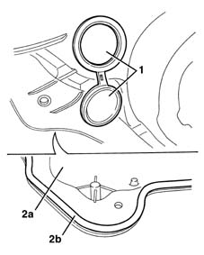

7205E37 STRIPPING FRONT SIDE DOOR INNER SUPPORT FRAME
- Path
- Procedures > 72 PANELS AND FRAME > 7205 STRIPPING FOR REPLACEMENT OPERATIONS > 7205E exterior parts > 7205E37 STRIPPING FRONT SIDE DOOR INNER SUPPORT FRAME
- Kind
- repair procedure (removal / refitting; the operation number is the code)
- Applies to
- all engines; all production periods
- Interactive page
- https://sloeber94.github.io/elrnDB-lYpsln/en/#/2429708
Applies to: all engines; all production periods
7005C44 interior handle panel - r r
7005M11 Driver's front door electric window control SWITCH - R.R.
7005M12 passenger side front door electrically operated window switch - r r
7005E12 corner cover of one front side door, lh or rh r r
7005E08 front side door interior panel r r
7005D14 front side door descending window glass - r r with door panel (and mount frame) removed
7005A08 interior support frame of one side door r r with door panel removed
7005M28 front side door electrically operated window motor - r r with door panel-mount frame removed
5580T11 bose sound system front speaker (one), lh or rh - r r with door panel removed (alternative)
5505A43 (DIGITAL NETWORK) CONTROL UNIT IN DRIVER'S DOOR -R.R. WITH PANEL REMOVED
5505A47 (Digital network node) CONTROL UNIT in passenger door - R.R. with panel removed (alternative)
7005N20 front side door lock motor/catch assembly - rr with door panel and support frame removed
5505B10 front door wiring - r r
7005C52 interior opening handle - r r
1. Prise up both covers
2. Recover the frame (2a) with gasket (2b).

Topics linked from this page (17)
- 5505A43 (DIGITAL NETWORK) CONTROL UNIT IN DRIVER'S DOOR -R.R. WITH PANEL REMOVED
- 5505A47 (Digital network node) CONTROL UNIT in passenger door - R.R. with panel removed
- 5505B10 front door wiring - r r
- 5570T90 front speaker - r r
- 5580T11 bose sound system front speaker (one), lh or rh - r r with door panel removed
- 7005A08 interior support frame of one side door r r with door panel removed
- 7005C44 interior handle panel - r r
- 7005C50 front side door interior opening mechnism r-r for repair or replacement with door panel removed
- 7005C52 interior opening handle - r r
- 7005D14 front side door descending window glass - r r with door panel (and mount frame) removed
- 7005E08 front side door interior panel r r
- 7005E12 corner cover of one front side door, lh or rh r r
- 7005M11 Driver's front door electric window control SWITCH - R.R.
- 7005M12 passenger side front door electrically operated window switch - r r
- 7005M27 ELECTRIC 'WINDOW OPENING MECHANISM FOR ONE FRONT DOOR, LEFT OR RIGHT - R.R. WIWTH SUPPORT FRAME REMOVED
- 7005M28 front side door electrically operated window motor - r r with door panel-mount frame removed
- 7005N20 front side door lock motor/catch assembly - rr with door panel and support frame removed